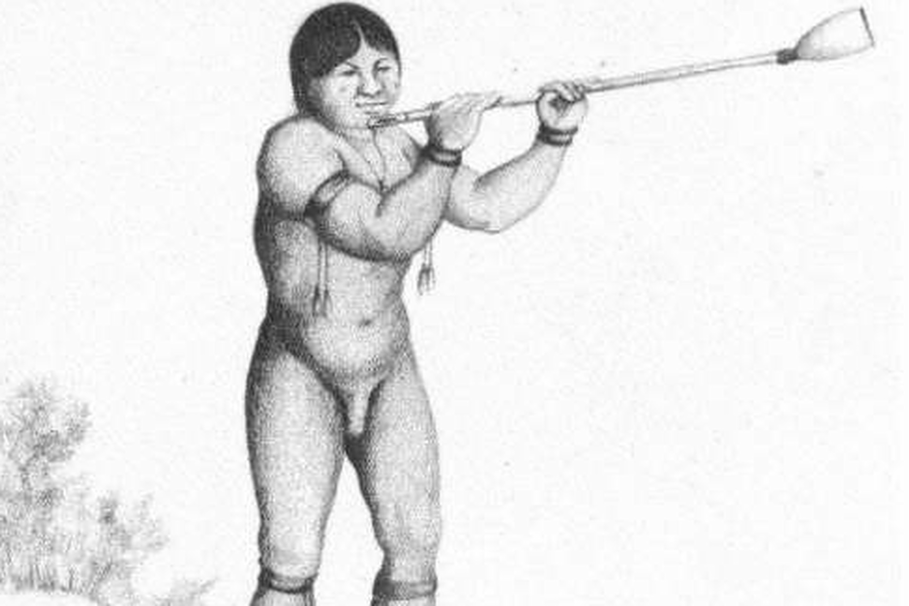

El wakaránty y el iguaéru de los Ava
Nota 027
Inicio > Blog Bitácora de un músico > Nota 027
Los Ava, un pueblo de habla guaraní de las tierras bajas de Bolivia y Argentina, preservaron una compleja tradición musical modelada por influencias amazónicas, arawak, andinas y coloniales, pese a siglos de guerras, desplazamientos e intervención misionera. Estrechamente vinculada a rituales como el aréte guásu, su herencia musical incluye tambores, flautas, trompetas, silbatos, idiófonos y el singular violín turumi, generalmente elaborados artesanalmente por los propios intérpretes e insertos en prácticas ceremoniales, sociales y simbólicas que articulan música, danza, memoria, sexualidad, guerra y relaciones entre vivos y muertos.
El wakaránty es una trompeta natural compuesta. Su nombre significa literalmente "cuerno de vaca". En algunas fuentes aparece como wakar'hanti o incluso huacananti. En Bolivia, se le suele llamar "corneta del aréte" o "corneta del Izozog".
Se fabrica a partir de un trozo de caña de hasta 2,50 m de largo, al que se le quitan los nudos o tabiques internos y se le añade un pabellón de cuerno de vaca. Este pabellón también puede elaborarse moldeando la piel de la cola de un buey con arena caliente, una técnica utilizada en las cercanas Tarija (Bolivia) y Jujuy (Argentina) para fabricar la caña tarijeña y la corneta, respectivamente; en ese caso, el instrumento se llama wakaráe punta ("cola de vaca"). Antiguamente, según el padre Bernardino Niño (1912), el pabellón también se fabricaba con la piel del tapir (Tapirus terrestris) e incluso con la cola de un armadillo. El sacerdote explica que, para darle al instrumento una apariencia "lujosa", la abertura lateral que sirve de boquilla solía adornarse con la corteza de la raíz del güembé (Philodendron bipinnatifidum), una planta epífita.
Para tocarlo, se sostiene en diagonal. Las fuentes indican que este cuerno se incorporó tardíamente como instrumento de alarma, con usos bélicos durante las batallas y para convocar a la gente a realizar tareas agrícolas durante la siembra del maíz. Aunque su uso es cada vez menor, actualmente se utiliza para convocar al aréte guásu y para bailar las tradicionales "rondas" de Pascua.
Los porongos o iguaéru, por su parte, son cuernos cortos hechos de calabazas a las que se les extrajeron las semillas.
Más información sobre estos artefactos sonoros puede encontrarse en el libro digital de acceso libre Instrumentos musicales de los Ava, accesible a través de la sección "Libros digitales sobre música. Serie 1".